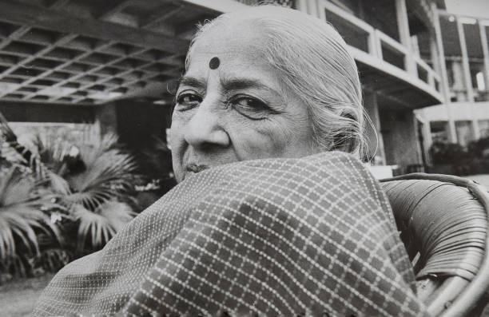
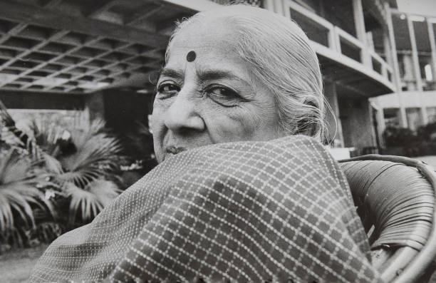
 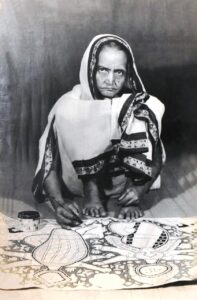
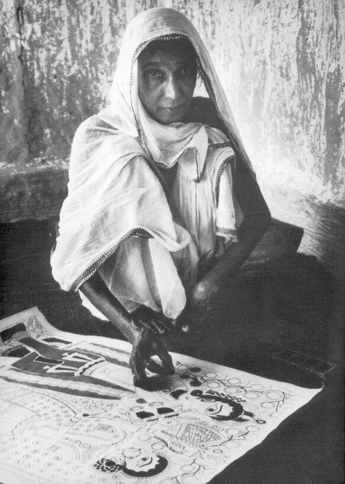
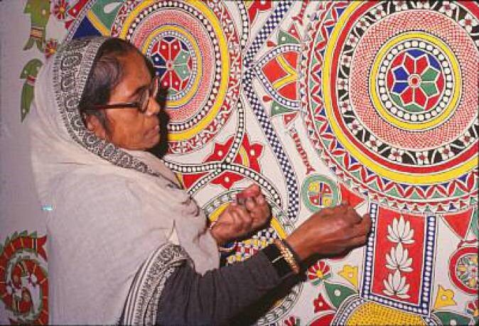
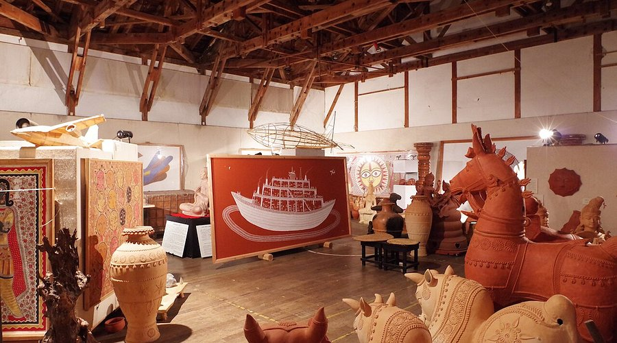
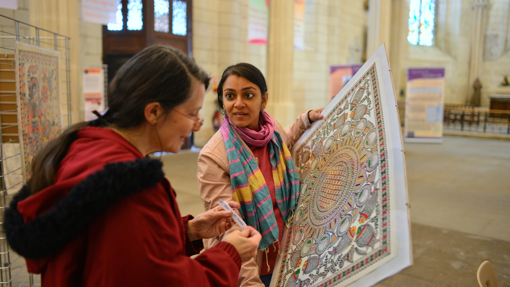
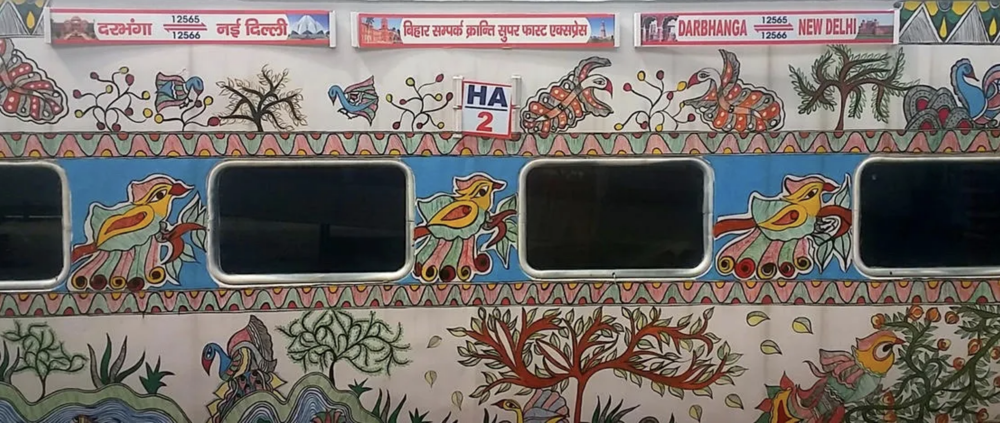
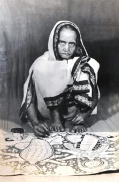
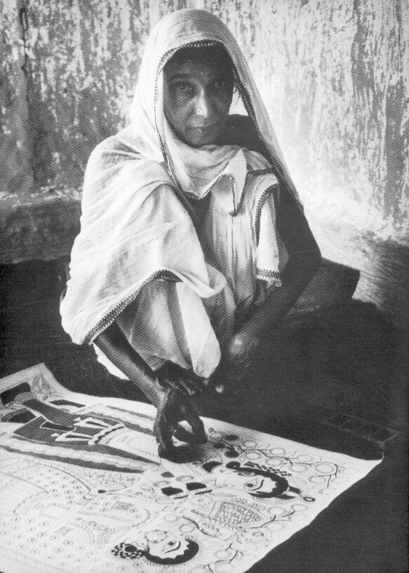
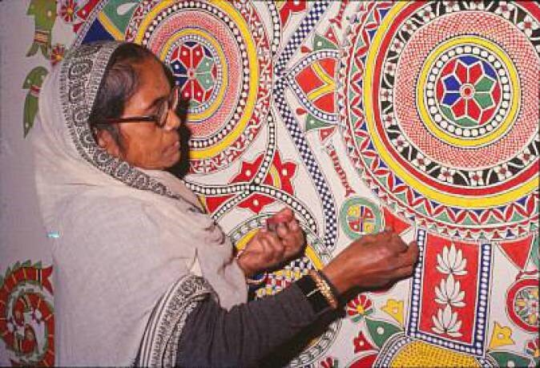
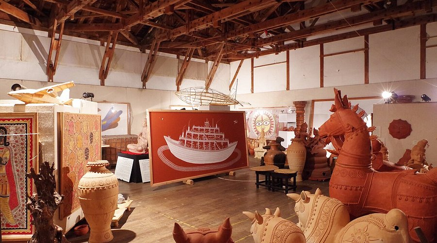
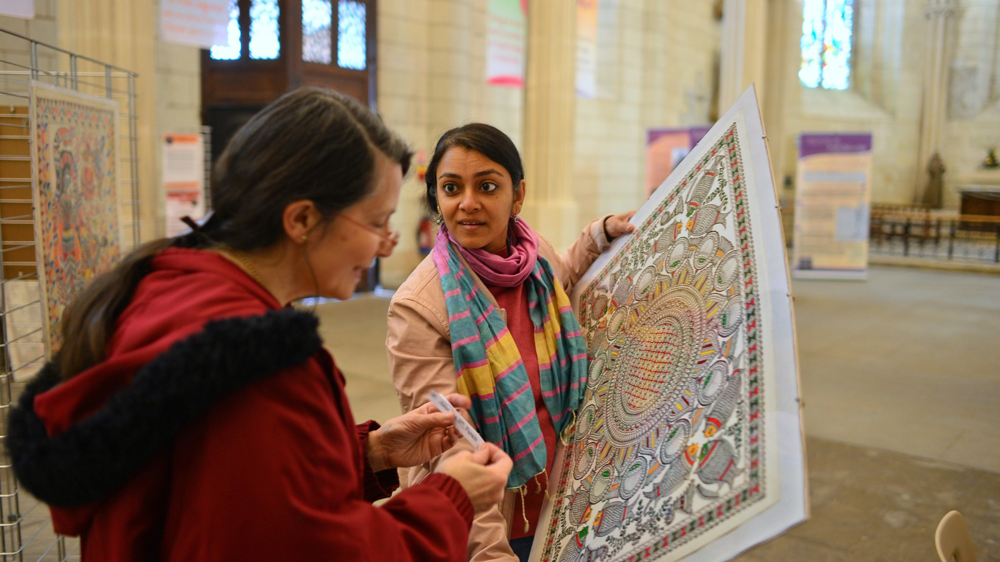
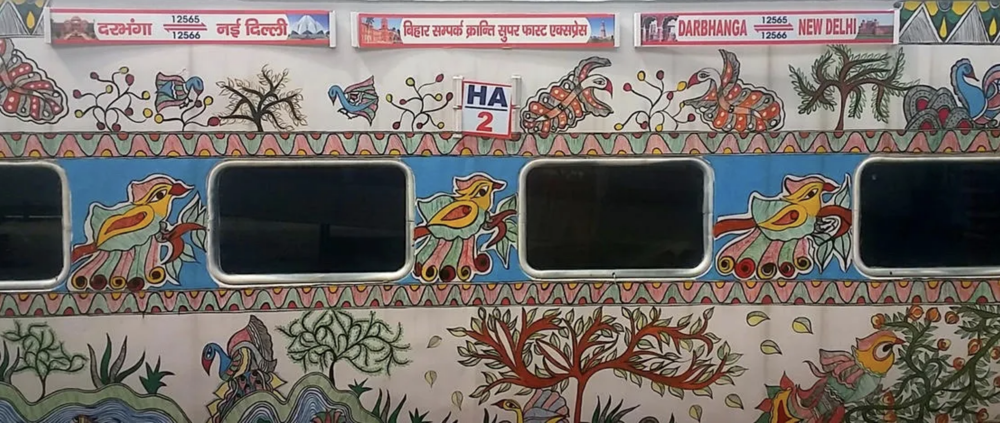

TIMELINE ↓
This is the timeline of Madhubani Art.
8th or 7th century BCE
Mithila is historically associated with the ancient kingdom of Videha, with its capital at Janakpur. King Janak of Mithila commissions artists to capture moments of his daughter Sita's wedding to Lord Ram, believed to be the origin of this 2500-year-old folk art.
12th century CE
Vidyapati, also known as Vidyapati Thakur, was a renowned 14th-15th century Indian poet, writer, and philosopher. Vidyapati's poetry, particularly his work “Kirtipataka,” describes the Mithila painting as part of the Shringara Rasa (aesthetic of love and beauty), suggesting an early association between the art form and tantric themes.
1919
SEWA Madhubani, under the direction of Gauri Mishra, has developed new local uses for Mithila art, such as advocating women's literacy, nutrition, prenatal care, breast feeding of infants, and religious tolerance.
January 15, 1934
Severe earthquakes struck Northern Bihar and Nepal, leading to the “discovery” of Madhubani paintings by British colonial officer William G. Archer. In January 1934, W.G. Archer said he had 'discovered' an exciting ancient wall painting in which he saw modern beauty paralleled with contemporary Western art.
Late 1960s
Pupul Jayakar, an Indian activist and writer who is part of the All India Handicrafts Board, sends artist Bhaskar Kulkarni to Mithila to encourage women to replicate their mural paintings on paper from painting on floors and walls to make a living.
1960s-1970s
Madhubani paintings transitioned from wall art to paper and canvas, shifting from domestic to commercial art.
1975
Jagdamba Devi received the National Award in 1970 and became the first female artist to receive the Padma Shri.
1976
Sita Devi receives the National Award, further elevating the recognition of Madhubani art.
1981
Ganga Devi receives the National Award and later gains international recognition for her work.
1982
The Mithila Museum in Tokamachi, Japan, opened in 1982 and houses one of the world’s largest collections of Madhubani art. Japanese curator Tokio Hasegawa founded the museum to protect Madhubani art, which he felt was in danger of being lost to Western influences. Hasegawa invited Madhubani artists to Japan to paint and help establish the museum. This museum features the artworks of Sita and Ganga Devi.
2003
The Mithila Art Institute was founded in Madhubani town with support from the Ethnic Arts Foundation of California. The institute provides a two-year program that trains artists, many of whom come from Jitwarpur.
2016-2018
UNESCO features Madhubani art on trains to spread awareness.
2020
The Bihar Chief Minister laid the foundation for 'Mithila Haat,' a project to showcase Jitwarpur as a craft village. This initiative, supported by the Ministry of Textiles, is estimated to cost ₹9.37 crore (1.2 million).